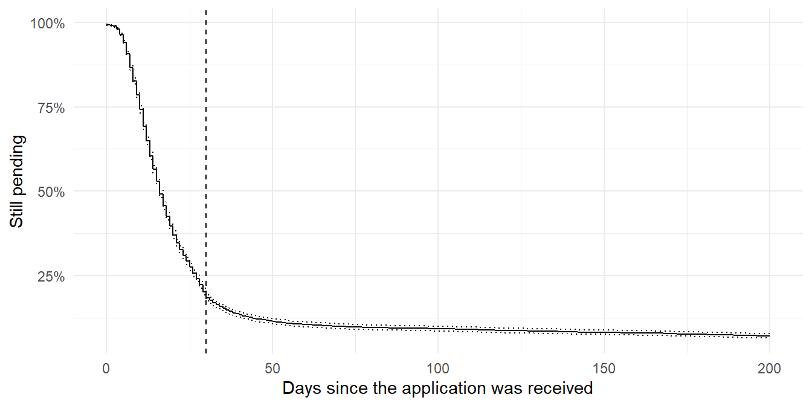
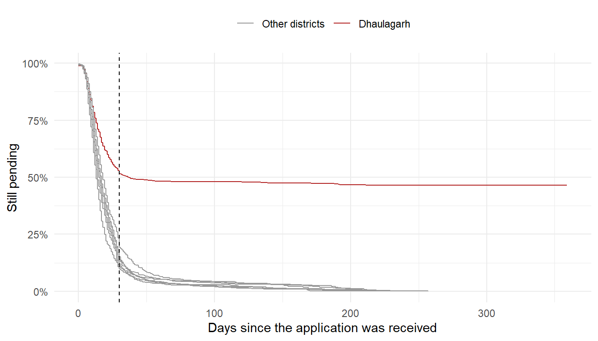
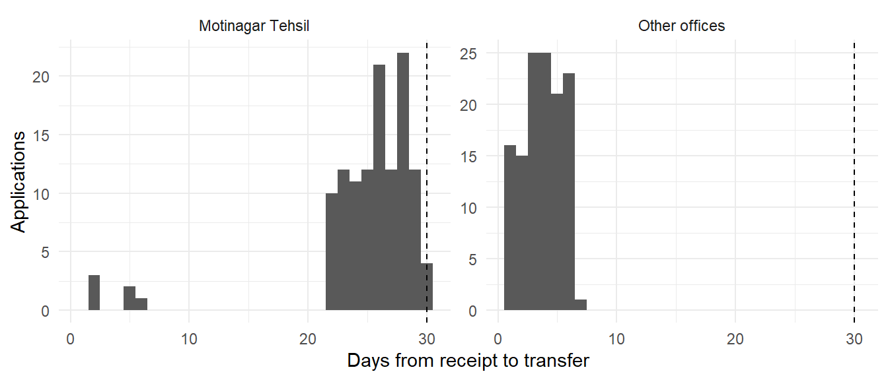
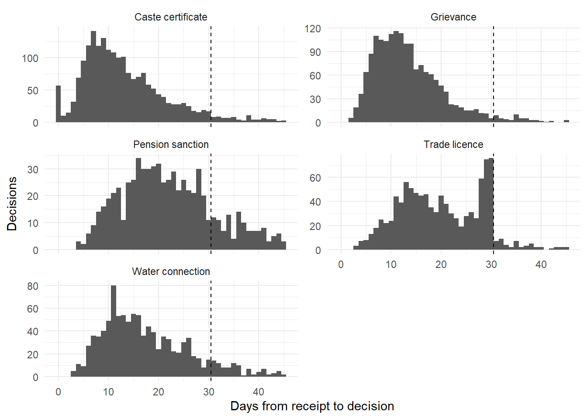

9 Delays and Pendency
A State has a law that guarantees citizens certain services within a fixed time. A caste certificate, a trade licence or a water connection is applied for on a portal, and the office must decide within the notified time. The portal reports that most applications were disposed of in about two weeks. The audit is asked to check whether the State keeps its promise. The first instinct is to take the applications closed during the year and average the days each took. That figure looks reassuring. But it leaves out every case still pending on the cut-off date, and those are the slowest cases of all. A district that has quietly stopped clearing its difficult cases can look as fast as the best one.
Performance audits ask this question again and again, of claims, grievances, pension cases, refunds, information requests, court cases and projects. This chapter shows how to answer it without being misled by the pending cases. It uses survival analysis, also called time-to-event analysis. The method came from medical research, where the event was the death of a patient and the question was how long patients survived. Here the event is happier. It is “the case was disposed of”. The same mathematics handles a case that is still open on the cut-off date, just as it handled a patient still alive at the end of a study.
The chapter starts with checks of the dates. It then draws the Kaplan-Meier curve, compares districts and offices, measures the share decided within the time limit, and looks briefly at what drives delay with a Cox model. Finally it looks for signs that the clock is being managed rather than the work done.
This chapter uses tidyverse, survival and broom. The survival package comes with R. If the others are missing, install them with the command below. Section C.1 lists the packages of every chapter.
install.packages(c("tidyverse", "broom"))Prerequisites
9.1 Where time is lost
A service delivered on time leaves a simple trail. An application is received, it may be transferred or returned, and in the end it is approved or rejected. Each step has a date, and each date can be checked.
| Record | What it holds | What can go wrong |
|---|---|---|
| Application register | Every application, with its number, office, service and date of receipt | Applications not entered, or entered late, so the clock starts late |
| Disposal record | The decision and its date | Dates missing, impossible, back-dated, or bunched just under the limit |
| Status | Disposed, rejected, transferred or pending | A transfer or a rejection counted as a disposal when nothing was done |
| Links between applications | Which application continues an earlier one | A case closed and reopened under a new number, so its clock starts again |
| Notified time limits | The days allowed for each service | Limits not known to the office, or measured from the wrong date |
The control is simple. Every application should be decided within the time allowed, counted from the day it was received. An application that waits longer should be visible as pending, not hidden.
9.2 Our data, a year of a State’s services portal
Our auditee is the services portal of an imaginary State. Eight districts run seventeen offices. Each district has a Sadar office at its headquarters and a Tehsil office, and Sonpur also has a small office in its hills. The portal takes five kinds of application. These are caste certificates, pension sanctions, trade licences, water connections and grievances. We have every application received in 2024-25, with the cut-off date of 31 March 2025. All names and numbers are made up. There is one table, applications, with one row per application.
-
idis the application number given by the portal. -
district,officeandservicesay where it was filed and for what. -
receivedanddisposedare the dates of receipt and decision.disposedis empty for a pending case. -
statusis disposed (approved), rejected, transferred (sent to another office) or pending. -
reopened_fromholds the number of an earlier application that this one continues, when the portal knows of one.
In our example the State has notified 30 days for every service. This is an illustrative norm for this example only. Real laws set a different limit for each service, sometimes counted in working days. In real work, apply the actual limits notified by your government.
Most of the data is routine. Caste certificates are quick, and some are issued over the counter on the same day. Pension cases take longer. A few cases in every office are genuinely complex, or wait for the applicant to supply a document, and take months. Applications for caste certificates surge in June and July, when students seek admission, and take longer then. Cases received just before a festival holiday wait a few days more. Some applicants are rejected for want of documents and apply again weeks later. A few applications reach the wrong office and are transferred within days. Into this, these cases have been planted.
- A district that looks fast but is not. In Dhaulagarh, a large share of cases simply stop moving. Its closed cases look as quick as anyone’s, because the slow ones are still pending.
- Disposals bunched under the limit. Trade licences that would have taken five or six weeks are recorded as decided on day 28, 29 or 30.
- The clock reset. The Kesargaon Sadar office rejects slow cases just before the limit, and the same case comes back within days under a new number.
- Disposal by transfer. The Motinagar Tehsil office transfers many of its slow cases to another office just before the limit, and counts them as disposed of.
- Date errors. A few disposal dates fall before the date of receipt, and a few are missing.
Let us build the data.
Code to create the services portal data
set.seed(2503)
fy_start <- as.Date("2024-04-01")
cutoff <- as.Date("2025-03-31")
offices <- tribble(
~district, ~office, ~weight,
"Amarpur", "Amarpur Sadar", 1.1,
"Amarpur", "Amarpur Tehsil", 0.8,
"Belkheda", "Belkheda Sadar", 1.0,
"Belkheda", "Belkheda Tehsil", 0.7,
"Chandanpur", "Chandanpur Sadar", 1.2,
"Chandanpur", "Chandanpur Tehsil", 0.8,
"Dhaulagarh", "Dhaulagarh Sadar", 1.0,
"Dhaulagarh", "Dhaulagarh Tehsil", 0.8,
"Kesargaon", "Kesargaon Sadar", 1.0,
"Kesargaon", "Kesargaon Tehsil", 0.7,
"Lakhanpur", "Lakhanpur Sadar", 1.1,
"Lakhanpur", "Lakhanpur Tehsil", 0.7,
"Motinagar", "Motinagar Sadar", 0.9,
"Motinagar", "Motinagar Tehsil", 0.8,
"Sonpur", "Sonpur Sadar", 1.0,
"Sonpur", "Sonpur Tehsil", 0.7,
"Sonpur", "Sonpur Hills", 0.04)
district_speed <- c(Amarpur = 0.9, Belkheda = 1.0, Chandanpur = 0.85, Dhaulagarh = 0.85,
Kesargaon = 1.05, Lakhanpur = 0.95, Motinagar = 1.1, Sonpur = 1.0)
services <- tribble(
~service, ~share, ~median_days, ~reject_p,
"Caste certificate", 0.30, 9, 0.08,
"Pension sanction", 0.12, 24, 0.10,
"Trade licence", 0.16, 21, 0.12,
"Water connection", 0.17, 17, 0.10,
"Grievance", 0.25, 13, 0.15)
# ---- Applications received during the year ----
n0 <- 7600
days_all <- seq(fy_start, cutoff, by = "day")
pick_day <- function(svc) {
w <- rep(1, length(days_all))
w[wday(days_all) == 1] <- 0.35 # fewer on Sundays
if (svc == "Caste certificate") { # admission season
w[month(days_all) %in% 6:7] <- w[month(days_all) %in% 6:7] * 3.2
}
sample(days_all, 1, prob = w)
}
apps <- tibble(service = sample(services$service, n0, TRUE, prob = services$share))
apps$received <- as.Date(map_dbl(apps$service, pick_day))
apps <- apps |>
mutate(office = sample(offices$office, n(), TRUE, prob = offices$weight),
district = offices$district[match(office, offices$office)]) |>
left_join(services, by = "service")
# Festival and national holidays delay cases received in the week before
holidays <- as.Date(c("2024-08-15", "2024-10-12", "2024-11-01", "2024-11-02",
"2025-01-26", "2025-03-14"))
near_holiday <- function(d) map_lgl(d, \(x) any(holidays - x >= 0 & holidays - x <= 6))
# ---- Days each case would take, if we could wait for all of them ----
apps <- apps |>
mutate(peak = service == "Caste certificate" & month(received) %in% 6:7,
rejected = runif(n()) < reject_p,
mu = log(median_days * district_speed[district] * if_else(peak, 2.0, 1) *
if_else(rejected, 0.7, 1)),
t = rlnorm(n(), mu, 0.55),
t = t + if_else(near_holiday(received), 4, 0),
# Genuinely complex cases, in every office (innocent)
complex = runif(n()) < 0.035,
t = t + if_else(complex, runif(n(), 50, 220), 0),
# Planted. In Dhaulagarh, almost half the cases stop moving
stuck = district == "Dhaulagarh" & runif(n()) < 0.46,
t = if_else(stuck, rlnorm(n(), log(600), 0.25), t),
# A small hill office, slower and with few cases
t = if_else(office == "Sonpur Hills", t * 1.8, t),
t = pmax(0, round(t)),
# Some caste certificates issued over the counter (innocent)
t = if_else(service == "Caste certificate" & runif(n()) < 0.04, 0, t),
key = row_number(), parent = NA_integer_)
# ---- Transfers ----
apps <- apps |>
mutate(transfer = runif(n()) < 0.02, # wrong office, sent on quickly
t = if_else(transfer, sample(1:6, n(), TRUE), t),
# Planted. Motinagar Tehsil transfers slow cases just before the limit
late_tr = office == "Motinagar Tehsil" & !transfer & t > 22 & runif(n()) < 0.75,
transfer = transfer | late_tr,
t = if_else(late_tr, sample(22:29, n(), TRUE), t))
# ---- Planted. Trade licences recorded as decided just under the limit ----
apps <- apps |>
mutate(bunched = service == "Trade licence" & !transfer & !complex & t > 30 & t <= 75 &
runif(n()) < 0.65,
t = if_else(bunched, sample(c(28, 29, 30), n(), TRUE, prob = c(0.15, 0.4, 0.45)), t))
# ---- Planted. Kesargaon Sadar rejects slow cases and reopens them under a new number ----
reset <- apps |> filter(office == "Kesargaon Sadar", !transfer, t > 26, runif(n()) < 0.8)
next_key <- max(apps$key)
chain_rows <- list()
for (k in seq_len(nrow(reset))) {
row <- reset[k, ]
remaining <- row$t; cur <- row$received; parent <- NA_integer_; key <- row$key; first <- TRUE
out <- list()
while (remaining > 26 && (first || runif(1) < 0.8)) {
close <- sample(25:29, 1); gap <- sample(0:3, 1)
out[[length(out) + 1]] <- tibble(key = key, parent = parent, received = cur, t = close,
reset_closed = TRUE)
parent <- key; next_key <- next_key + 1; key <- next_key
cur <- cur + close + gap
remaining <- max(remaining - close - gap, sample(3:20, 1))
first <- FALSE
}
out[[length(out) + 1]] <- tibble(key = key, parent = parent, received = cur, t = remaining,
reset_closed = FALSE)
chain_rows[[k]] <- bind_rows(out) |>
mutate(service = row$service, office = row$office, district = row$district,
rejected = if_else(reset_closed, TRUE, row$rejected),
transfer = FALSE, bunched = FALSE)
}
chain <- bind_rows(chain_rows)
apps <- apps |> mutate(reset_closed = FALSE) |> filter(!key %in% reset$key)
# ---- Applicants who apply again after a rejection (innocent) ----
again <- apps |>
filter(rejected, !transfer, runif(n()) < 0.12) |>
mutate(parent = key,
received = received + t + sample(7:90, n(), TRUE),
rejected = runif(n()) < reject_p,
t = round(rlnorm(n(), log(median_days * district_speed[district]), 0.55)),
transfer = FALSE, bunched = FALSE, reset_closed = FALSE)
again$key <- next_key + seq_len(nrow(again))
# ---- Apply the cut-off date ----
all_apps <- bind_rows(apps, chain, again) |>
filter(received <= cutoff) |>
mutate(status = case_when(transfer ~ "transferred",
rejected | reset_closed ~ "rejected",
TRUE ~ "disposed"),
disposed = received + t,
# Offices are closed on Sundays. Bunched cases go back a day, others forward
disposed = case_when(wday(disposed) != 1 ~ disposed,
bunched ~ disposed - 1,
TRUE ~ disposed + 1),
status = if_else(disposed > cutoff, "pending", status),
disposed = if_else(status == "pending", as.Date(NA), disposed)) |>
arrange(received, key) |>
mutate(id = sprintf("PS%05d", row_number()))
all_apps$reopened_from <- all_apps$id[match(all_apps$parent, all_apps$key)]
# What an auditor never sees, the days each case would take in the end
truth <- all_apps |>
filter(status != "transferred") |>
select(id, district, true_days = t)
# ---- Planted. Date errors ----
e1 <- sample(which(all_apps$status %in% c("disposed", "rejected") &
all_apps$received >= as.Date("2025-01-01")), 5)
all_apps$disposed[e1] <- all_apps$disposed[e1] - years(1) # wrong year typed
e2 <- sample(setdiff(which(all_apps$status == "disposed"), e1), 2)
all_apps$disposed[e2] <- all_apps$received[e2] - sample(2:9, 2)
e3 <- sample(setdiff(which(all_apps$status == "disposed" &
all_apps$disposed < as.Date("2025-02-01")), c(e1, e2)), 4)
all_apps$disposed[e3] <- NA # date never entered
applications <- all_apps |>
select(id, district, office, service, received, disposed, status, reopened_from)
rm(list = setdiff(ls(), c("applications", "truth", "cutoff")))Let us look at the table.
glimpse(applications)Rows: 7,785
Columns: 8
$ id <chr> "PS00001", "PS00002", "PS00003", "PS00004", "PS00005", "…
$ district <chr> "Lakhanpur", "Lakhanpur", "Dhaulagarh", "Sonpur", "Sonpu…
$ office <chr> "Lakhanpur Tehsil", "Lakhanpur Sadar", "Dhaulagarh Sadar…
$ service <chr> "Caste certificate", "Grievance", "Water connection", "C…
$ received <date> 2024-04-01, 2024-04-01, 2024-04-01, 2024-04-01, 2024-04…
$ disposed <date> 2024-04-01, 2024-04-19, 2024-04-12, 2024-04-23, 2024-05…
$ status <chr> "rejected", "disposed", "disposed", "disposed", "dispose…
$ reopened_from <chr> NA, NA, NA, NA, NA, NA, NA, NA, NA, NA, NA, NA, NA, NA, …applications |>
count(status)# A tibble: 4 × 2
status n
<chr> <int>
1 disposed 5899
2 pending 852
3 rejected 786
4 transferred 248There are 7,785 applications. Of these, 852 were pending on the cut-off date. id is the key, and reopened_from points back to another id in the same table. So the table can be joined to itself, to follow a case through its numbers. In all, 185 applications carry such a link.
The code also kept one more table, truth. It holds the number of days each case would take in the end, if we could wait as long as needed. An auditor never has this. We use it only to show how close each method comes to the truth.
Ask for every application received in the period, with all its dates, and not only the cases disposed of. The pending cases matter most, and so do those received before the period and still pending at its start. Ask for the status and date of every step, including returns, transfers and rejections. Ask how the portal links an application to an earlier one, and for that link field. Ask for the notified time limits of each service, with the date from which each applied and whether they count calendar or working days. Ask for the list of holidays. Note the cut-off date of the extract, and who ran it.
9.3 The problem with averages of closed cases
Let us start with six imaginary applications, received on the same day. We look at them 20 days later.
# A tibble: 6 × 3
case days closed
<chr> <dbl> <lgl>
1 A 4 TRUE
2 B 7 TRUE
3 C 9 TRUE
4 D 12 TRUE
5 E 20 FALSE
6 F 20 FALSE Four cases were decided, in 4, 7, 9 and 12 days. Two are still pending after 20 days. The average of the closed cases is 8 days. But that average ignores E and F, which have already taken 20 days and will take longer. We do not know how much longer. We know only that they will take at least 20 days.
This is the whole problem. A pending case is not missing information. It is partial information. It says that the case has taken at least this long so far. Dropping it makes delay look shorter than it is. Counting it as if it closed on the cut-off date also makes delay look shorter, though less so. Statisticians call such a case censored. Its true time is cut off by the end of our observation. The methods of this chapter use what a censored case tells us, and nothing more.
Now our data. For each case we work out the days from receipt to decision. For a pending case we count the days to the cut-off date and mark it as censored. A transferred case was not decided by this office, so it is censored on the day of transfer. Rejections are decisions, so they count as disposals. We set aside, for now, the cases whose dates are missing or impossible. Section 9.4 looks at them.
event is TRUE for a decision and FALSE for a censored case. This pair of columns, the time and whether the event happened, is all that survival analysis needs. Let us compare the usual figure, the average of closed cases, with the truth that we happen to know.
naive <- cases |>
filter(event) |>
summarise(closed_mean = mean(days), closed_median = median(days), .by = district)
true_fig <- truth |>
summarise(true_mean = mean(true_days), true_median = median(true_days), .by = district)
naive |>
left_join(true_fig, by = "district") |>
mutate(across(where(is.numeric), round)) |>
arrange(district)# A tibble: 8 × 5
district closed_mean closed_median true_mean true_median
<chr> <dbl> <dbl> <dbl> <dbl>
1 Amarpur 19 14 21 14
2 Belkheda 21 16 22 16
3 Chandanpur 18 13 22 13
4 Dhaulagarh 18 13 296 36
5 Kesargaon 20 16 21 17
6 Lakhanpur 20 15 22 15
7 Motinagar 20 16 22 16
8 Sonpur 21 16 24 16Look at Dhaulagarh. The average of its closed cases is 18 days and the median 13 days. Other districts range from 18 to 21 days on average, and 13 to 16 days at the median. On these figures Dhaulagarh is as quick as any district. In truth, the median case of Dhaulagarh takes 36 days, and the average 296 days. Across the State, the closed cases average 19.7 days, while the true average is 57 days. Almost all of that gap comes from Dhaulagarh.
In other districts the closed-case figures are close to the truth. That is because their cases are quick compared with the year we observe. The bias grows as cases get slower, as the period gets shorter, and as the backlog grows. A district that stops clearing hard cases improves its own average of closed cases.
The average, or median, of cases closed during the year is the figure most reports quote. It ignores every pending case, and the pending cases are the slowest. So it understates delay, and it understates it most where delay is worst. Never conclude from it that an office is quick. Use the methods below, which count the pending cases for what they tell us.
9.4 First, check the dates
Every number in this chapter is a difference between two dates. So the dates come first. The methods of Chapter 18 apply throughout.
9.4.1 Missing and impossible dates
A decided case must have a decision date, and the decision cannot come before the receipt.
# A tibble: 11 × 6
id office received disposed status problem
<chr> <chr> <date> <date> <chr> <chr>
1 PS00591 Chandanpur Sadar 2024-05-02 2024-04-24 disposed decided before recei…
2 PS02616 Lakhanpur Sadar 2024-07-19 NA disposed decision date missing
3 PS02929 Amarpur Sadar 2024-07-30 2024-07-26 disposed decided before recei…
4 PS04167 Lakhanpur Sadar 2024-09-26 NA disposed decision date missing
5 PS04902 Chandanpur Sadar 2024-11-02 NA disposed decision date missing
6 PS05085 Lakhanpur Tehsil 2024-11-11 NA disposed decision date missing
7 PS06729 Lakhanpur Sadar 2025-02-05 2024-02-17 disposed decided before recei…
8 PS06863 Motinagar Sadar 2025-02-10 2024-02-17 rejected decided before recei…
9 PS06880 Belkheda Sadar 2025-02-11 2024-03-05 disposed decided before recei…
10 PS06903 Kesargaon Tehsil 2025-02-12 2024-02-17 disposed decided before recei…
11 PS07162 Kesargaon Tehsil 2025-02-27 2024-03-29 disposed decided before recei…The test finds 11 cases. Four have no decision date though the status says decided. Seven were decided before they were received. In five of these the decision falls almost a year early, which looks like the wrong year typed in a date of early 2025. The others are a few days early, perhaps two dates swapped. Each needs the file. A case decided before it was received may also be a back-dated entry. These cases were left out of cases above. They are too few to change any result, but they say something about the care taken in entering dates.
9.4.2 Disposed of on the day received
A decision on the day of receipt is possible for a simple service, but worth a look.
# A tibble: 5 × 4
service decided same_day same_day_pct
<chr> <int> <int> <dbl>
1 Caste certificate 2057 57 2.8
2 Grievance 1710 0 0
3 Water connection 1077 0 0
4 Pension sanction 754 0 0
5 Trade licence 1076 0 0 Most same-day decisions are caste certificates, 57 of them. In our example these were issued over the counter from existing records, which is the service working well. In real work, take a small sample from each service and check that the certificate was really issued that day, and that a same-day rejection was not used to clear the queue.
9.4.3 The ageing of pending cases
Pending cases are the heart of this chapter, so let us see how old they are. cut() puts each age into a band.
# A tibble: 8 × 5
district `Up to 30 days` `31 to 90` `91 to 180` `Over 180`
<chr> <int> <int> <int> <int>
1 Amarpur 36 4 7 0
2 Belkheda 36 5 2 0
3 Chandanpur 47 8 12 2
4 Dhaulagarh 47 61 88 275
5 Kesargaon 52 6 3 0
6 Lakhanpur 38 6 2 2
7 Motinagar 39 6 3 0
8 Sonpur 51 7 7 0In most districts, pending cases are young. They were received in the last weeks of the year and are still within the limit. Dhaulagarh is different. It holds 471 of the 852 pending cases, and 275 of them are over 180 days old, against 4 in all other districts together. The age of the pending cases is the first warning that the closed-case figures were hiding something.
9.4.4 Bunching on the last day of the month
Offices often review pendency at a monthly meeting. A rush of decisions on the last day of the month may show cases closed in a hurry for the meeting, or entered later with a back-dated date. Let us count the share of each office’s decisions that fall on the last day of a month. With about 30 days in a month, roughly 3% would be expected by chance.
# A tibble: 5 × 3
office decided month_end_pct
<chr> <int> <dbl>
1 Dhaulagarh Tehsil 227 6.2
2 Chandanpur Sadar 570 4.4
3 Lakhanpur Tehsil 369 4.1
4 Belkheda Sadar 462 3.9
5 Chandanpur Tehsil 433 3.9The highest is Dhaulagarh Tehsil, at 6.2%. That is about twice what chance gives, but it rests on only 14 decisions. Among seventeen offices, one is likely to look a little high by chance. There is no sign of a month-end rush. A test that finds little is also a result, and belongs in the working papers. The other kind of bunching, just before the time limit, is taken up in Section 9.9.3.
9.5 How long cases really take, the Kaplan-Meier curve
The Kaplan-Meier method answers a simple question. What share of cases is still pending after each number of days? It uses the pending cases correctly. Let us work through the six toy cases by hand.
On day 4, six cases are open and one is decided. So the share still pending falls to 5/6. On day 7, five are open and one is decided. The share falls by a further 4/5, to 5/6 × 4/5. Day 9 and day 12 work the same way. Cases E and F are never decided. They simply leave the count on day 20, without pulling the share down. Each step uses only the cases still under observation on that day. That is how a pending case counts for exactly what it tells us.
# A tibble: 5 × 8
time n.risk n.event n.censor estimate std.error conf.high conf.low
<dbl> <dbl> <dbl> <dbl> <dbl> <dbl> <dbl> <dbl>
1 4 6 1 0 0.833 0.183 1 0.583
2 7 5 1 0 0.667 0.289 1 0.379
3 9 4 1 0 0.5 0.408 1 0.225
4 12 3 1 0 0.333 0.577 1 0.108
5 20 2 0 2 0.333 0.577 1 0.108Surv(days, closed) pairs the time with whether the event happened. survfit() fits the curve, and tidy() from the broom package turns it into a table. n.risk is the number of cases still open, n.event the number decided that day, n.censor those that left the count still pending, and estimate the share still pending. After 12 days, 0.33 of the cases, that is a third, are still pending. The curve stops falling there because no more decisions are seen.
Now the whole State.
Call: survfit(formula = Surv(days, event) ~ 1, data = cases)
n events median 0.95LCL 0.95UCL
[1,] 7774 6674 16 16 17The output gives the median time to disposal, 16 days, with a 95% confidence interval of 16 to 17 days. Half of all cases are decided within this time. The interval is narrow because there are thousands of cases. Let us draw the curve. geom_step() draws it as a staircase, since the share changes only on days when a case is decided.
tidy(km_all) |>
filter(time <= 200) |>
ggplot(aes(time, estimate)) +
geom_step() +
geom_step(aes(y = conf.low), linetype = "dotted") +
geom_step(aes(y = conf.high), linetype = "dotted") +
geom_vline(xintercept = 30, linetype = "dashed") +
scale_y_continuous(labels = scales::percent) +
labs(x = "Days since the application was received", y = "Still pending") +
theme_minimal()
Read the curve from the left. The curve falls steeply in the first three weeks, as most cases are decided. At the dashed line, 18% of cases are still pending. So 82% are decided within the 30-day limit. After that the curve flattens into a long tail, the cases that take months. Where the curve is flat, nothing is being decided. Where it stays well above zero, a backlog is building.
For the audit report, three numbers from the curve say most of it. These are the median days to disposal, the share decided within the time limit, and the share still pending after, say, three times the limit. summary() with times reads the curve at any day we choose.
Call: survfit(formula = Surv(days, event) ~ 1, data = cases)
time n.risk n.event survival std.err lower 95% CI upper 95% CI
30 1334 5976 0.183 0.00461 0.1744 0.192
90 533 569 0.094 0.00359 0.0872 0.101After 90 days, 9.4% of cases are still pending. Unlike the average of closed cases, these numbers use every case.
9.6 Comparing districts and offices
Let us fit one curve for each district. Adding ~ district does this.
Call: survfit(formula = Surv(days, event) ~ district, data = cases)
n events median 0.95LCL 0.95UCL
district=Amarpur 1012 947 14 14 15
district=Belkheda 874 817 16 15 17
district=Chandanpur 1090 1003 13 13 14
district=Dhaulagarh 991 495 37 29 211
district=Kesargaon 1010 940 17 16 18
district=Lakhanpur 954 887 15 15 16
district=Motinagar 924 744 18 17 19
district=Sonpur 919 841 16 15 17The medians of most districts lie between 13 and 18 days. Dhaulagarh’s is 37 days, with an interval of 29 to 211. The average of its closed cases suggested it was ordinary. The curves show why it is not.
tidy(km_district) |>
mutate(district = str_remove(strata, "district=")) |>
ggplot(aes(time, estimate, colour = district == "Dhaulagarh", group = district)) +
geom_step() +
geom_vline(xintercept = 30, linetype = "dashed") +
scale_colour_manual(values = c("grey60", "firebrick"),
labels = c("Other districts", "Dhaulagarh")) +
scale_y_continuous(labels = scales::percent) +
labs(x = "Days since the application was received", y = "Still pending", colour = NULL) +
theme_minimal() +
theme(legend.position = "top")
The seven grey curves fall together and almost reach zero. Dhaulagarh’s falls at first like the others, and then levels off. After 180 days, 47% of its cases are still pending. Its quick cases are as quick as anyone’s. But a large group of its cases is not moving at all.
9.6.1 Is the difference real? The log-rank test
Curves from a sample always differ a little. The log-rank test asks whether the differences are larger than chance would give. It compares, day by day, the decisions seen in each group with those expected if all groups were alike. survdiff() runs it.
Call:
survdiff(formula = Surv(days, event) ~ district, data = cases)
N Observed Expected (O-E)^2/E (O-E)^2/V
district=Amarpur 1012 947 742 56.45 67.53
district=Belkheda 874 817 708 16.87 20.05
district=Chandanpur 1090 1003 721 110.50 131.67
district=Dhaulagarh 991 495 1433 614.34 932.98
district=Kesargaon 1010 940 803 23.35 28.31
district=Lakhanpur 954 887 731 33.46 39.93
district=Motinagar 924 744 791 2.79 3.37
district=Sonpur 919 841 745 12.34 14.74
Chisq= 1025 on 7 degrees of freedom, p= <2e-16 The chi-square is 1025 on 7 degrees of freedom, and the p-value is tiny. Observed and Expected show that Dhaulagarh has far fewer decisions than expected. The test says the districts differ, not by how much. With thousands of cases, even small differences test as significant. Without Dhaulagarh, the other seven districts still differ, with a chi-square of 71 and a p-value of 2.1^{-13}. Yet their medians differ by only a few days. Section 30.12 explains why significant is not the same as important. Report the medians and shares, and use the test only to confirm that a large difference is not chance.
9.6.2 A table for each office
The audit report needs a table. For each office we want the number of cases, the median days with its interval, and the share decided within the limit. summary() gives both from one fit.
km_office <- survfit(Surv(days, event) ~ office, data = cases)
office_med <- as_tibble(summary(km_office)$table, rownames = "strata") |>
transmute(office = str_remove(strata, "office="), cases = records,
median_days = median, lower = `0.95LCL`, upper = `0.95UCL`)
s_office <- summary(km_office, times = 30)
office_30 <- tibble(office = str_remove(s_office$strata, "office="),
within_30_pct = round(100 * (1 - s_office$surv)))
office_table <- office_med |>
left_join(office_30, by = "office") |>
arrange(desc(median_days))
office_table |>
print(n = 17)# A tibble: 17 × 6
office cases median_days lower upper within_30_pct
<chr> <dbl> <dbl> <dbl> <dbl> <dbl>
1 Dhaulagarh Sadar 546 42 27 NA 48
2 Dhaulagarh Tehsil 445 35 27 NA 48
3 Sonpur Hills 28 23 19 33 75
4 Motinagar Tehsil 430 19 17 20 69
5 Kesargaon Sadar 642 17 16 18 94
6 Motinagar Sadar 494 17 16 19 86
7 Belkheda Sadar 499 16 15 18 85
8 Belkheda Tehsil 375 16 15 18 85
9 Kesargaon Tehsil 368 16 15 18 84
10 Lakhanpur Tehsil 396 16 14 17 84
11 Sonpur Sadar 535 16 15 18 87
12 Sonpur Tehsil 356 16 15 17 85
13 Lakhanpur Sadar 558 15 14 16 88
14 Amarpur Sadar 561 14 14 16 89
15 Amarpur Tehsil 451 14 13 15 87
16 Chandanpur Sadar 623 13 12 14 90
17 Chandanpur Tehsil 467 13 13 15 89records is the number of cases in each curve. Both Dhaulagarh offices sit at the top, with the lowest shares within the limit. Near them is Sonpur Hills, with a median of 23 days. But it has only 28 cases, and its interval runs from 19 to 33 days. An office with few cases can look very good or very bad by chance. Before reporting it, look at its cases one by one. Two other offices stand out in the last column. Motinagar Tehsil decides only 69% of its cases within the limit, though its median is ordinary. Kesargaon Sadar decides 94%, the best in the State. We come back to both in Section 9.9.
9.7 Against the time limit
The law promises a decision within the time limit. The audit asks three questions about it. What share of cases was decided within it? How many pending cases are already past it? Which cases exceeded it by far?
The first answer comes from the curve, as above. Let us see it for each service.
km_service <- survfit(Surv(days, event) ~ service, data = cases)
s_service <- summary(km_service, times = 30)
tibble(service = str_remove(s_service$strata, "service="),
within_30_pct = round(100 * (1 - s_service$surv)),
lower = round(100 * (1 - s_service$upper)),
upper = round(100 * (1 - s_service$lower)))# A tibble: 5 × 4
service within_30_pct lower upper
<chr> <dbl> <dbl> <dbl>
1 Caste certificate 85 83 86
2 Grievance 87 85 89
3 Pension sanction 66 63 69
4 Trade licence 83 80 85
5 Water connection 78 76 80Grievances do best, with 87% decided within 30 days. Pension sanctions do worst, with 66%. Note that the interval of the share decided comes from the interval of the share pending, turned round. Trade licences show 83%. We will see in Section 9.9.3 that some of this is not what it seems.
Next, the pending cases already past the limit.
# A tibble: 8 × 4
district pending beyond_limit beyond_3x
<chr> <int> <int> <int>
1 Dhaulagarh 471 424 363
2 Chandanpur 69 22 14
3 Sonpur 65 14 7
4 Amarpur 47 11 7
5 Lakhanpur 48 10 4
6 Motinagar 48 9 3
7 Kesargaon 61 9 3
8 Belkheda 43 7 2Of the 852 pending cases, 506 are past the limit already, and 403 are past three times the limit. Dhaulagarh accounts for 363 of these. These are cases where the guarantee has already failed, though no report of disposals shows them.
Finally, the decided cases that exceeded the limit by far. Three times the limit is our example measure of “far”.
# A tibble: 5 × 3
service cases median_days
<chr> <int> <dbl>
1 Caste certificate 40 152.
2 Grievance 28 150
3 Trade licence 28 156.
4 Water connection 17 129
5 Pension sanction 16 128.129 decided cases took more than 90 days. They are spread across services and offices. Many will be the genuinely complex cases. A sample of them, read with their files, shows whether the delay was the office’s or had a cause outside its control.
Some cases take long for good reasons. A pension case may wait for service records from another State. An applicant may be asked for a document and take weeks to send it. A water connection may need a pipeline that is not yet laid. Many laws stop the clock while the applicant is asked for something, and some count only working days. Before calling a case a delay, check the file for these. The method of this chapter measures time. The file says whose time it was.
9.8 What drives delay
The curves compare one factor at a time. Delay may depend on several at once, such as the district, the service and the season. The Cox model looks at them together. Let us add a column for cases received in June or July, the admission season.
cases <- cases |>
mutate(season = if_else(month(received) %in% 6:7, "June-July", "Other months"),
season = fct_relevel(season, "Other months"))
cox <- coxph(Surv(days, event) ~ district + service + season, data = cases)
tidy(cox, exponentiate = TRUE, conf.int = TRUE) |>
select(term, hazard_ratio = estimate, conf.low, conf.high) |>
mutate(across(where(is.numeric), \(x) round(x, 2)))# A tibble: 12 × 4
term hazard_ratio conf.low conf.high
<chr> <dbl> <dbl> <dbl>
1 districtBelkheda 0.92 0.83 1.01
2 districtChandanpur 1.09 1 1.19
3 districtDhaulagarh 0.21 0.19 0.24
4 districtKesargaon 0.91 0.83 1
5 districtLakhanpur 0.96 0.88 1.05
6 districtMotinagar 0.72 0.65 0.79
7 districtSonpur 0.85 0.78 0.94
8 serviceGrievance 0.88 0.82 0.94
9 servicePension sanction 0.42 0.38 0.46
10 serviceTrade licence 0.51 0.47 0.55
11 serviceWater connection 0.6 0.56 0.65
12 seasonJune-July 0.68 0.64 0.72Each number in hazard_ratio compares a group with a base group. The base is the first level of each factor, here Amarpur, caste certificates and other months. In plain words, a hazard ratio says how much faster a case is disposed of. A ratio of 1 means as fast as the base. A ratio of 0.5 means that, on any day, a pending case is half as likely to be decided as a similar case in the base group. A ratio above 1 means faster.
Dhaulagarh has a ratio of 0.21. Its pending cases are decided at about 0.21 times the pace of Amarpur’s, after allowing for the mix of services and the season. Pension sanctions are decided at 0.42 times the pace of caste certificates. Cases received in June and July move at 0.68 times the pace of other months. Most of that comes from caste certificates, which surge in the admission season. The model spreads the effect over every service, since it has no term for the two together.
The model rests on one assumption. A hazard ratio is a single number for the whole period, so the gap between groups must stay in the same proportion from the first day to the last. cox.zph() tests this.
cox.zph(cox) chisq df p
district 533.2 7 < 2e-16
service 538.9 4 < 2e-16
season 21.6 1 3.4e-06
GLOBAL 1164.3 12 < 2e-16A small p-value means the assumption fails. Here it fails for every term, and for the model as a whole. We can see why. Dhaulagarh’s quick cases move like anyone’s, and its stuck cases do not move at all. One ratio cannot describe both. The services differ in shape too. Pension cases have a long tail, and trade licences pile up on day 30. When the check fails, do not report the ratio as if it held. Either fit the model separately within each district with strata(district) in the formula, which keeps the other ratios and drops the district’s, or compare periods separately, such as the first 30 days and after. Here the curves of Figure 9.2 already tell the story better than any single ratio. So use the Cox model to rank possible causes, and the curves to report.
9.9 Gaming the clock
When an office is judged by the share of cases decided in time, it may learn to manage the clock rather than the work. The portal then reports good figures while applicants wait. Three patterns are common, and each leaves a trace in the data.
9.9.1 Closed and reopened under a new number
An office may reject a slow case just before the limit, and then accept the same case again under a new number. The new number starts with a fresh clock. Applicants also apply again after a genuine rejection, so a reopening alone means little. What matters is the timing. Let us join each reopened application to the one it continues. This is a self-join, the table joined to itself.
reopened <- applications |>
filter(!is.na(reopened_from)) |>
inner_join(applications |>
select(reopened_from = id, prev_received = received,
prev_decided = disposed, prev_status = status),
by = "reopened_from") |>
mutate(prev_days = as.numeric(prev_decided - prev_received),
gap = as.numeric(received - prev_decided))
reopened |>
mutate(quick = gap <= 3 & between(prev_days, 25, 30)) |>
summarise(reopened = n(), quick = sum(quick),
median_gap = median(gap), .by = office) |>
arrange(desc(quick)) |>
head(6)# A tibble: 6 × 4
office reopened quick median_gap
<chr> <int> <int> <dbl>
1 Kesargaon Sadar 118 106 2
2 Belkheda Sadar 5 0 40
3 Lakhanpur Tehsil 11 0 40
4 Motinagar Tehsil 2 0 29
5 Chandanpur Tehsil 6 0 14
6 Amarpur Tehsil 4 0 65gap is the number of days between the earlier decision and the new application. prev_days is how long the earlier one had taken. A quick reopening here is one that comes within three days of a rejection made on day 25 to 30. In most offices, applicants come back after a few weeks, with a median gap of 43 days. That is an applicant gathering the missing papers. Kesargaon Sadar is different. It has 118 reopenings, 106 of them quick, with a median gap of 2 days. Its rejections fall just before the limit, and the case is back almost at once. We follow this office in Section 9.13.
9.9.2 Disposed of by transfer
An application filed at the wrong office should be transferred, and quickly. But a transfer can also be used to get rid of a slow case. If the portal counts a transfer as a disposal, the office’s figures improve, and the receiving office starts a fresh clock. Let us look at the share transferred, and when.
# A tibble: 5 × 5
office cases transferred transferred_pct median_day
<chr> <int> <int> <dbl> <dbl>
1 Motinagar Tehsil 430 122 28.4 26
2 Dhaulagarh Sadar 546 18 3.3 4
3 Chandanpur Sadar 623 13 2.1 4
4 Lakhanpur Tehsil 396 8 2 4
5 Lakhanpur Sadar 558 11 2 5Most offices transfer about 2% of their cases, within the first week. Motinagar Tehsil transfers 28% of its cases, and the median transfer comes on day 26. A wrong-office application is obvious on the first day. It does not take three weeks to notice. A histogram makes the point.
tr |>
mutate(group = if_else(office == "Motinagar Tehsil", "Motinagar Tehsil", "Other offices")) |>
ggplot(aes(days)) +
geom_histogram(binwidth = 1, boundary = 0.5) +
facet_wrap(~ group, scales = "free_y") +
geom_vline(xintercept = 30, linetype = "dashed") +
labs(x = "Days from receipt to transfer", y = "Applications") +
theme_minimal()
How much does this flatter the office? The portal counts a transfer as a disposal. Our analysis treats it as censored, since nothing was decided. Let us compare the two.
portal_view <- cases |>
filter(office == "Motinagar Tehsil") |>
mutate(event_portal = status != "pending")
c(portal = 1 - summary(survfit(Surv(days, event_portal) ~ 1, data = portal_view), times = 30)$surv,
audit = 1 - summary(survfit(Surv(days, event) ~ 1, data = portal_view), times = 30)$surv) |>
round(2)portal audit
0.95 0.69 On the portal’s count, Motinagar Tehsil decides 95% of cases within the limit. Counting only real decisions, the figure is 69%. Even the second figure is too kind, since a censored case is assumed to behave like the cases that stayed. The transferred cases continue somewhere else, and their applicants are still waiting. The receiving offices’ records show how long they really took.
9.9.3 Disposals bunched just under the limit
If decisions are made, or recorded, to beat the limit, they pile up just before it. Real decision times have no reason to jump on day 28 and vanish on day 31. Section 25.7 found bills bunched below a sanction limit in the same way. Let us draw the days to decision for each service, up to 45 days.
cases |>
filter(event, days <= 45) |>
ggplot(aes(days)) +
geom_histogram(binwidth = 1, boundary = 0.5) +
geom_vline(xintercept = 30.5, linetype = "dashed") +
facet_wrap(~ service, ncol = 2, scales = "free_y") +
labs(x = "Days from receipt to decision", y = "Decisions") +
theme_minimal()
Four services fall smoothly. Trade licences rise sharply on days 28, 29 and 30, and drop to almost nothing on day 31. Let us put numbers on it. For each service we compare the decisions per day on days 28 to 30 with those on days 24 to 27 and 31 to 34.
# A tibble: 5 × 5
service per_day_24_27 per_day_28_30 per_day_31_34 ratio
<chr> <dbl> <dbl> <dbl> <dbl>
1 Caste certificate 25.2 17.3 7.75 0.7
2 Grievance 16.5 9.33 5.25 0.6
3 Water connection 25.8 13 10.5 0.5
4 Pension sanction 22.8 20.3 10.8 0.9
5 Trade licence 26 70 5.5 2.7For trade licences, 70 decisions a day fall on days 28 to 30, against 26 a day just before and 6 just after. The ratio is 2.7. For the other services it is between 0.5 and 0.9. The pattern holds in every district, with ratios from 1.3 to 3.8. So it is a practice of the trade licence section across the State, not one office. Staff may be working hard against the deadline. Or decisions taken later may be recorded with an earlier date. The gap after day 30 favours the second, since real work against a deadline still lets some cases slip a day or two. The data cannot settle it. The portal’s audit trail can. It records when each decision was entered, and by whom. A decision dated day 29 but entered on day 40 is back-dated.
9.10 What the first book adds
Several tests from R for Audit Analytics apply directly. We run each in a few lines, and the chapters cited explain them in full.
Gaps in the application numbers, Chapter 37. The portal numbers applications in order. A missing number may be an application deleted before it was ever counted.
nums <- as.integer(str_remove(applications$id, "PS"))
setdiff(seq(min(nums), max(nums)), nums)integer(0)No number is missing. In real data, also look for days with no applications at all, as in Section 37.5. An office that stops taking applications for a week has a backlog that no table of pending cases shows.
Monthly receipts and pendency, Chapter 49. Receipts and pending cases at each month end form two time series. A backlog shows as pendency rising while receipts are steady.
month_ends <- seq(as.Date("2024-05-01"), as.Date("2025-04-01"), by = "month") - 1
tibble(month_end = month_ends,
pending = map_int(month_ends, \(d) sum(cases$received <= d &
(cases$status == "pending" | cases$end > d)))) |>
mutate(dhaulagarh = map_int(month_end, \(d) sum(cases$district == "Dhaulagarh" &
cases$received <= d &
(cases$status == "pending" | cases$end > d))),
others = pending - dhaulagarh)# A tibble: 12 × 4
month_end pending dhaulagarh others
<date> <int> <int> <int>
1 2024-04-30 312 40 272
2 2024-05-31 380 85 295
3 2024-06-30 678 148 530
4 2024-07-31 748 226 522
5 2024-08-31 676 264 412
6 2024-09-30 694 304 390
7 2024-10-31 708 327 381
8 2024-11-30 757 368 389
9 2024-12-31 731 382 349
10 2025-01-31 783 412 371
11 2025-02-28 791 448 343
12 2025-03-31 852 471 381map_int() counts, for each month end, the cases received by then and not yet closed. In the other districts, pendency rises in the admission season and falls back. Dhaulagarh’s rises every month and never falls. That is a backlog growing, and the series is a simple chart for the report.
Comparing skewed times, Section 30.8. The Wilcoxon test compares two groups of skewed values. But it knows nothing of censoring. On closed cases alone it would find Dhaulagarh ordinary, exactly as the averages did. For time to an event, use the log-rank test of Section 9.6 instead.
Other chapters. Section 38.7 measured the time between steps of a file with process mining. That is the next step when a portal records every step, not only receipt and decision. It shows where in the chain the days are lost. Chapter 34 finds the same applicant applying twice, which may hide reopenings that the portal never linked. Chapter 10 read the grievances of a health scheme. The days taken to settle them can be studied with the curves of this chapter.
9.11 A risk view of each office
An office caught by one test may have a good reason. One caught by several is a better use of the auditor’s time. As in Section 7.9 and Section 8.13, the simplest way to combine flags is to count them. Each flag compares the office with the State.
state_median <- summary(km_all)$table[["median"]]
state_within <- 100 * within30
state_pend30 <- mean(cases$status == "pending" & cases$days > 30)
state_late_rej <- mean(cases$status == "rejected" & between(cases$days, 25, 30))
office_flags <- cases |>
summarise(cases = n(),
pend_beyond = mean(status == "pending" & days > 30),
late_rej = mean(status == "rejected" & between(days, 25, 30)),
late_transfers = sum(status == "transferred" & days > 15),
.by = office) |>
left_join(office_table |> select(office, median_days, within_30_pct), by = "office") |>
left_join(ro |> summarise(quick_reopen = sum(quick), .by = office), by = "office") |>
left_join(bad_dates |> count(office, name = "date_errors"), by = "office") |>
mutate(across(c(quick_reopen, date_errors), \(x) coalesce(x, 0L)),
slow_median = median_days > 1.5 * state_median,
low_within_limit = within_30_pct < state_within - 10,
many_pending = pend_beyond > 2 * state_pend30,
late_rejections = late_rej > 2 * state_late_rej,
quick_reopening = quick_reopen >= 5,
late_transfer = late_transfers >= 5,
date_error = date_errors > 0,
flags = slow_median + low_within_limit + many_pending + late_rejections +
quick_reopening + late_transfer + date_error) |>
arrange(desc(flags), desc(median_days))
flag_names <- c("slow_median", "low_within_limit", "many_pending", "late_rejections",
"quick_reopening", "late_transfer", "date_error")
office_flags$tests <- apply(office_flags[flag_names], 1, \(r) paste(flag_names[r], collapse = ", "))
office_flags |>
select(office, cases, flags, tests) |>
print(n = 8)# A tibble: 17 × 4
office cases flags tests
<chr> <int> <int> <chr>
1 Dhaulagarh Sadar 546 3 slow_median, low_within_limit, many_pending
2 Dhaulagarh Tehsil 445 3 slow_median, low_within_limit, many_pending
3 Motinagar Tehsil 430 2 low_within_limit, late_transfer
4 Kesargaon Sadar 642 2 late_rejections, quick_reopening
5 Motinagar Sadar 494 1 date_error
6 Lakhanpur Tehsil 396 1 date_error
7 Belkheda Sadar 499 1 date_error
8 Kesargaon Tehsil 368 1 date_error
# ℹ 9 more rowsapply() pastes together the names of the flags each office raises. The thresholds are examples, set against the State’s own figures. Four offices raise two flags or more. They are Dhaulagarh Sadar, Dhaulagarh Tehsil, Motinagar Tehsil and Kesargaon Sadar. The two Dhaulagarh offices raise three flags each, but these measure much the same thing, slow cases piling up. Motinagar Tehsil is flagged for late transfers and a low share within the limit. Kesargaon Sadar is flagged for rejections just before the limit and quick reopenings. No measure of speed would ever flag it. Seven offices raise only the date error flag. A wrong date in one file is a lapse in data entry, not a sign of delay. Sonpur Hills raises no flag, though its median is high, because with so few cases nothing about it is certain. The trade licence bunching does not show here at all, because it is spread across every office. Some patterns belong to a service, not an office, and need their own test.
None of these tests proves a fault. Each says where to look. The work that follows is ordinary audit work, with registers, files, the portal’s audit trail and the applicants themselves. The analysis looks at every application, and so points that work at the right places.
9.12 Audit use case, a district that looks fast but is not
The department’s own report ranks districts by the average days taken to dispose of cases. Let us rebuild that ranking, and set the audit’s figures beside it.
dept_view <- cases |>
filter(event) |>
summarise(closed_avg = round(mean(days), 1), .by = district)
km_view <- as_tibble(summary(km_district)$table, rownames = "strata") |>
transmute(district = str_remove(strata, "district="), km_median = median)
s_d <- summary(km_district, times = c(30, 180))
share_view <- tibble(district = str_remove(s_d$strata, "district="), time = s_d$time,
surv = s_d$surv) |>
pivot_wider(names_from = time, values_from = surv, names_prefix = "s") |>
transmute(district, within_30_pct = round(100 * (1 - s30)),
pending_180_pct = round(100 * s180))
dept_view |>
left_join(km_view, by = "district") |>
left_join(share_view, by = "district") |>
arrange(closed_avg)# A tibble: 8 × 5
district closed_avg km_median within_30_pct pending_180_pct
<chr> <dbl> <dbl> <dbl> <dbl>
1 Dhaulagarh 18.1 37 48 47
2 Chandanpur 18.1 13 89 2
3 Amarpur 19.1 14 88 1
4 Lakhanpur 19.7 15 86 1
5 Kesargaon 19.7 17 90 0
6 Motinagar 20.1 18 81 1
7 Belkheda 20.8 16 85 1
8 Sonpur 21.5 16 86 2On the department’s measure, Dhaulagarh comes first, with a closed-case average of 18.1 days, level with Chandanpur. Nobody reading that report would look at it twice. On the audit’s measures it is last by far. It decides 48% of cases within the limit, against 81% to 90% elsewhere. After six months, 47% of its cases are still pending, against at most 2% elsewhere. Let us see which cases are stuck.
dh_cases |>
filter(status == "pending", days > 180) |>
count(office, service) |>
pivot_wider(names_from = office, values_from = n, values_fill = 0)# A tibble: 5 × 3
service `Dhaulagarh Sadar` `Dhaulagarh Tehsil`
<chr> <int> <int>
1 Caste certificate 45 47
2 Grievance 37 22
3 Pension sanction 15 16
4 Trade licence 21 23
5 Water connection 32 17The stuck cases are in both offices and every service, 150 in Dhaulagarh Sadar and 125 in Dhaulagarh Tehsil. It is not one difficult service, or one office. Something stopped the district’s work on a large share of all its cases, while it kept deciding the easy ones on time. A backlog of this kind may have many causes, such as vacant posts, a long-pending software problem, or files waiting on one officer’s desk. The figures cannot say which. They say clearly where to ask.
9.12.1 What the auditor does next
- Take a sample of the stuck cases from both offices and every service, and read the files. Note the last action on each and its date.
- Ask the district for its own pendency register and the minutes of its review meetings. Did the district know of the backlog, and what did it report upwards?
- Check the staff in position in both offices against the sanctioned posts for the year, as in Section 7.5.
- Use the portal’s audit trail to see when each stuck case was last opened, and by whom.
- Contact a sample of applicants. Ask whether they received the service by other means, gave up, or are still waiting. Their answers show the cost of the delay.
- Recommend that the department report the share decided within the limit and the age of pending cases, not the average of closed cases.
9.13 Audit use case, the clock is reset
Let us follow the quick reopenings of Kesargaon Sadar. First we link every application to the first application of its chain, its root. At the start, each application is its own root. Each step of the loop replaces a root with the application it continues.
quick_parent is a named vector. Looking up an application number in it gives the number it continues, or NA. Only quick reopenings are followed. An applicant who comes back after six weeks with new papers has made a new application. Each chain now runs from the first receipt to the last decision. We compare the office’s figures counted by application number, as the portal counts them, with the same figures counted by chain.
chains <- applications |>
filter(office == "Kesargaon Sadar") |>
left_join(links |> select(id, root), by = "id") |>
summarise(numbers = n(),
first_received = min(received),
last_status = status[which.max(received)],
last_decided = disposed[which.max(received)],
.by = root) |>
mutate(end = if_else(last_status == "pending", cutoff, last_decided),
days = as.numeric(end - first_received),
event = last_status %in% c("disposed", "rejected")) |>
filter(!is.na(end))
by_number <- cases |> filter(office == "Kesargaon Sadar")
fit_number <- survfit(Surv(days, event) ~ 1, data = by_number)
fit_chain <- survfit(Surv(days, event) ~ 1, data = chains)
tibble(counted_by = c("application number", "chain"),
cases = c(nrow(by_number), nrow(chains)),
median_days = c(summary(fit_number)$table[["median"]], summary(fit_chain)$table[["median"]]),
within_30_pct = round(100 * (1 - c(summary(fit_number, times = 30)$surv,
summary(fit_chain, times = 30)$surv))))# A tibble: 2 × 4
counted_by cases median_days within_30_pct
<chr> <int> <dbl> <dbl>
1 application number 642 17 94
2 chain 536 17 77Counted by number, Kesargaon Sadar decides 94% of its cases within the limit. Counted by chain, the figure is 77%. The median hardly moves, because most of the office’s cases are quick and never reset. The share within the limit is what the reset protects. Of its chains, 15 ran through three numbers or more. Here is the longest chain.
ex_chain# A tibble: 5 × 5
id received disposed status reopened_from
<chr> <date> <date> <chr> <chr>
1 PS01945 2024-06-26 2024-07-23 rejected <NA>
2 PS02824 2024-07-26 2024-08-20 rejected PS01945
3 PS03420 2024-08-22 2024-09-20 rejected PS02824
4 PS04103 2024-09-23 2024-10-19 rejected PS03420
5 PS04652 2024-10-20 2024-12-23 disposed PS04103 The applicant applied on 26 June 2024. The case was rejected four times, each time between day 25 and day 29, and each time it came back within days. Four of its five numbers met the 30-day limit. The applicant waited 180 days.
9.13.1 What the auditor does next
- Take a sample of the chains and read the rejection orders. Were the reasons real, and were they the same each time?
- Check in the portal’s audit trail who created each new number. An applicant who reapplies does so from the public side. An application created by office staff on the applicant’s behalf is a sign of a reset.
- Contact a sample of applicants. Did they know their application was rejected? Did they apply again, or was it done for them?
- Ask whether Kesargaon Sadar’s figures are used in any performance ranking or reward. That is often why a clock is managed.
- Search other offices for reopenings the portal did not link, by matching applicants’ names, mobiles and addresses, as in Chapter 34.
- Recommend that the portal carry the original date of receipt into any reopened case, and count time from it.
9.14 A suggested workflow
- Get every application, including those pending and those received before the period, with all dates, statuses, links and the notified limits. Record who extracted it and when.
- Check the dates. Missing and impossible dates, same-day decisions, the ageing of pending cases, and bunching at the month end.
- Define the event and the censoring. Decide what counts as a decision. Treat pending cases, and transfers, as censored, and say so in the report.
- Draw the Kaplan-Meier curve. Report the median days with its interval, the share decided within the limit, and the share pending after a long time.
- Compare districts, offices and services. Use curves and a table. Use the log-rank test to confirm a large difference, and remember that small offices are uncertain.
- Measure the time limit. Share within it, pending cases already past it, and cases far beyond it.
- Look for causes with a Cox model, and check its assumption.
- Look for gaming. Quick reopenings, late transfers, and bunching under the limit.
- Combine the flags for each office, and follow up the top ones with files, the audit trail and applicants.
- An average of closed cases ignores the pending cases, which are the slowest. It understates delay most where delay is worst.
- A pending case is censored. It tells us the case has taken at least this long. Survival analysis uses exactly that, and no more.
- The Kaplan-Meier curve gives the share still pending after each number of days. Read the median and the share within the limit from it.
- The log-rank test confirms a difference between groups. The medians and shares say how large it is.
- A hazard ratio says how much faster a case is decided. Check the assumption with
cox.zph()before you trust it. - A transfer or a rejection is not always a decision. Quick reopenings, late transfers and bunching under the limit are signs that the clock is being managed.
- A long time is not always a fault. The file says whose time it was.
9.15 Where next
Dates are in Chapter 18, and gaps in numbers and dates in Chapter 37. Statistical tests, and why significant is not the same as important, are in Chapter 30. The time between steps of a process is in Section 38.7, and bunching below a limit in Section 25.7. Monthly series are in Chapter 49, and duplicates in Chapter 34. In this book, counting flags is in Section 7.9 and Section 8.13, and a whole scheme, with its grievances, is audited in Chapter 10.
9.16 Try it yourself
These exercises use the objects of this chapter. Try each before opening the solution.
-
Pension cases alone. Fit a Kaplan-Meier curve for pension sanctions only. What is the median time to disposal, and what share is decided within 30 days?
TipSolutionCall: survfit(formula = Surv(days, event) ~ 1, data = filter(cases, service == "Pension sanction")) n events median 0.95LCL 0.95UCL [1,] 933 754 25 23 26summary(ex_pen, times = 30)Call: survfit(formula = Surv(days, event) ~ 1, data = filter(cases, service == "Pension sanction")) time n.risk n.event survival std.err lower 95% CI upper 95% CI 30 273 564 0.341 0.0164 0.31 0.375The median is 25 days, and 66% of pension cases are decided within 30 days. Pension cases are slower everywhere. Some of that is genuine, since they need service records, so read a sample of files before calling it a delay.
-
A different limit. Suppose the limit for caste certificates were 15 days. What share of caste certificates is decided within it, in each district?
TipSolution# A tibble: 8 × 2 district within_15_pct <chr> <dbl> 1 Amarpur 65 2 Belkheda 63 3 Chandanpur 72 4 Dhaulagarh 37 5 Kesargaon 61 6 Lakhanpur 66 7 Motinagar 53 8 Sonpur 60The shares range from 37% to 72%, with Dhaulagarh lowest at 37%. A limit is a choice of the law, and the analysis must use the limit that applies to each service.
-
The admission season. Compare caste certificates received in June and July with those received in other months. Use a log-rank test and the medians.
TipSolutionCall: survfit(formula = Surv(days, event) ~ season, data = ex_season) n events median 0.95LCL 0.95UCL season=Other months 1437 1261 10 9 10 season=June-July 899 796 19 18 20Call: survdiff(formula = Surv(days, event) ~ season, data = ex_season) N Observed Expected (O-E)^2/E (O-E)^2/V season=Other months 1437 1261 949 102.3 210 season=June-July 899 796 1108 87.7 210 Chisq= 210 on 1 degrees of freedom, p= <2e-16The median rises from 10 days in other months to 19 days in June and July. The seasonal surge is predictable. An office that knows students apply in June can plan staff for it, so a seasonal backlog is still worth a recommendation.
-
The portal’s view of every office. For each office, compute the share decided within 30 days if transfers are counted as disposals, as the portal does. Which office gains most compared with the audit’s figure in
office_table?TipSolutionex_portal <- survfit(Surv(days, status != "pending") ~ office, data = cases) ex_p <- summary(ex_portal, times = 30) ex_gain <- tibble(office = str_remove(ex_p$strata, "office="), portal_pct = round(100 * (1 - ex_p$surv))) |> left_join(office_table |> select(office, within_30_pct), by = "office") |> mutate(gain = portal_pct - within_30_pct) |> arrange(desc(gain)) head(ex_gain, 3)# A tibble: 3 × 4 office portal_pct within_30_pct gain <chr> <dbl> <dbl> <dbl> 1 Motinagar Tehsil 95 69 26 2 Dhaulagarh Sadar 50 48 2 3 Dhaulagarh Tehsil 49 48 1Motinagar Tehsil gains 26 percentage points, far more than any other office, whose gains are at most 2. How the event is defined can change an office’s result more than anything the office does.
-
Old pending cases by office. List the offices with pending cases older than 180 days, with the count and the age of the oldest.
TipSolution# A tibble: 5 × 3 office cases oldest_days <chr> <int> <dbl> 1 Dhaulagarh Sadar 150 359 2 Dhaulagarh Tehsil 125 358 3 Lakhanpur Tehsil 2 195 4 Chandanpur Tehsil 1 229 5 Chandanpur Sadar 1 193Five offices hold such cases. The two Dhaulagarh offices hold 275 of the 279. The other four are spread over three offices, and are likely the genuinely complex cases. These lists are where file reviews start.
9.17 Summary of functions used
| Function | Package | What it does |
|---|---|---|
Surv() |
survival | Pairs the days taken with whether the case was decided or censored |
survfit() |
survival | Fits a Kaplan-Meier curve, for all cases or for each group |
summary() with times
|
survival | Reads the share still pending, and the median with its interval, from a curve |
survdiff() |
survival | Log-rank test of whether curves differ by more than chance |
coxph() |
survival | Cox model of what drives delay, giving hazard ratios |
cox.zph() |
survival | Checks the proportional hazards assumption of a Cox model |
strata() |
survival | Fits a Cox model separately within each group |
tidy() |
broom | Turns a curve or a model into a table, ready for ggplot2 |
geom_step() |
ggplot2 | Draws a Kaplan-Meier curve and its confidence limits as a staircase |
geom_histogram() with binwidth = 1
|
ggplot2 | Shows decisions and transfers by day, to reveal bunching |
cut() |
base R | Puts the age of pending cases into bands |
ceiling_date(), month()
|
lubridate | Finds the last day of a month, and the month of receipt |
inner_join() of a table with itself |
dplyr | Links a reopened application to the one it continues |
between() |
dplyr | Picks decisions within a range of days |
map_int() |
purrr | Counts the pending cases at each month end |
setdiff() |
base R | Finds missing application numbers |